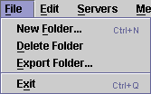

The File Menu is located to the far left of the menu bar. It contains commands for manipulating folders and for exiting the program.

| Keyboard Shortcut: | Ctrl+N |
| Toolbar Button: |
Creates a new folder for you to store messages in. You will be prompted to enter a name for the folder.
Folder names must have more than one character, may contain spaces, but not slashes. As a general rule, only use folder names which would be valid for normal folder names on your platform. You will be told if the folder name is invalid.
| Keyboard Shortcut: | None |
| Toolbar Button: |
Deletes a folder. This menu command is only enabled when a folder is selected in the servers & folders tree panel. You will lose all messages stored in the folder.
There is no confirmation dialogue.
| Keyboard Shortcut: | None |
| Toolbar Button: |
Exports a NewsAgent Folder to a folder on your hard drive containing text versions of all messages in the folder.
| Keyboard Shortcut: | Ctrl+Q |
| Toolbar Button: |
Terminates all network connections, removes the main NewsAgent window and saves cache data to disk. There may be a small delay after the main window disappears before NewsAgent actually terminates. Please allow NewsAgent time to save its cache.